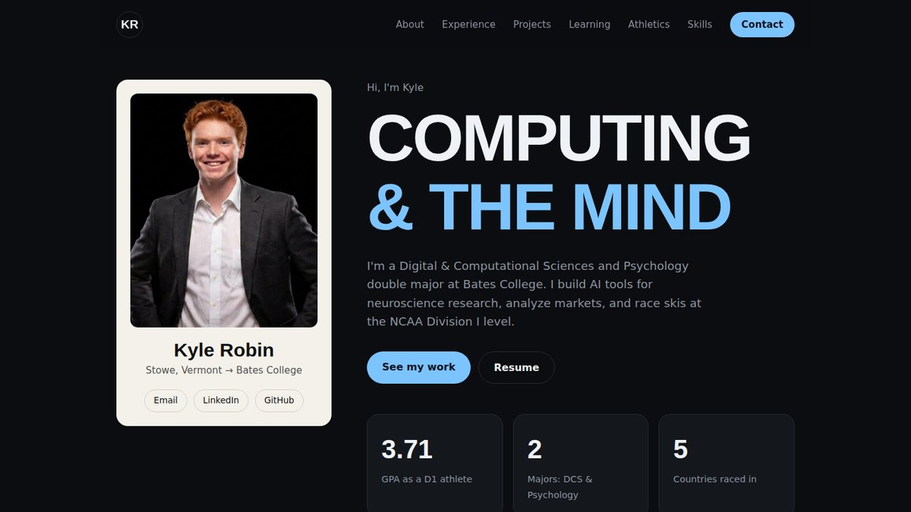

This Portfolio
A hand-coded personal website built for DCS340, and my first time setting up a full workflow between code, GitHub, and an AI assistant.

Overview
The first DCS340 project asked us to build a digital portfolio on GitHub that shows who we are as learners. I built this site from scratch without a website builder, so every part of it is code I can open and change.
How it works
- HTML holds the content and structure of every page.
- CSS handles the dark theme, layout, and responsive design, so the site works on both laptops and phones.
- JavaScript runs the mobile menu, the fade-in animations as you scroll, and the nav highlight.
- GitHub Pages hosts the site straight from my repository, so every commit updates the live site.
The process
- Studied an example portfolio and planned the sections around my resume.
- Used Claude as a coding assistant to draft the site, then edited the content to sound like me.
- Created the repository, turned on GitHub Pages, and debugged the deployment.
- Linked my optimization module work from Google Colab into the Learning Log.
- Added photos and a separate page for each project.
See the code
Everything behind this site is public on GitHub.
Next projectScent to Art
→